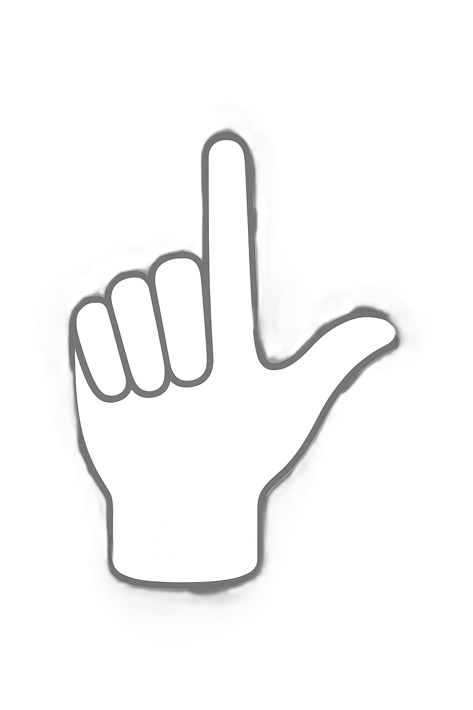
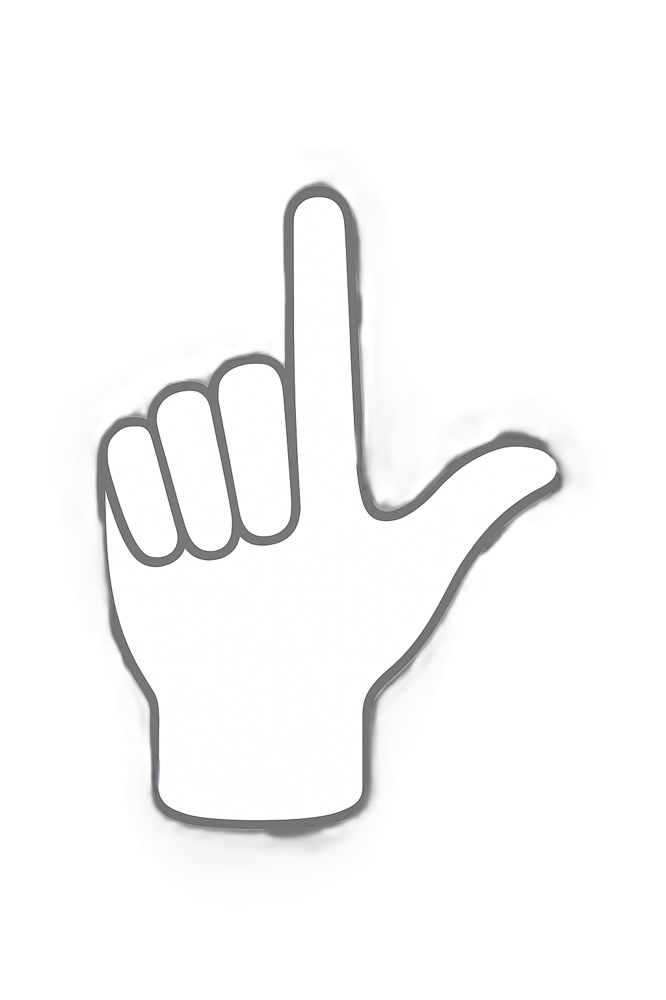

Communicate with Deaf and Hard of Hearing People
Studying asl promotes better awareness of and sensitivity to the deaf and hard of hearing community. SYGNAL is all you need to communicate with deaf and hard of hearing people.
Our Real-Time Sign Language Translator Solution
Gesture Detection
Ours ystem accuratelydetects specific hand gestures that correspond to individual letters of the alphabet.
ML Model Prediction
As ophisticatedMachineLearning (ML) model processes the detected gestures to predict each corresponding alphabet with high accuracy.
Alphabet Sequencing
Recogniseda lphabets are intelligently sequenced and stored to form coherent words and phrases.
Sentence to Speech
Once ac ompletephraseor sentence is formed and validated, it is then converted into spoken language using a text-to-speech engine.